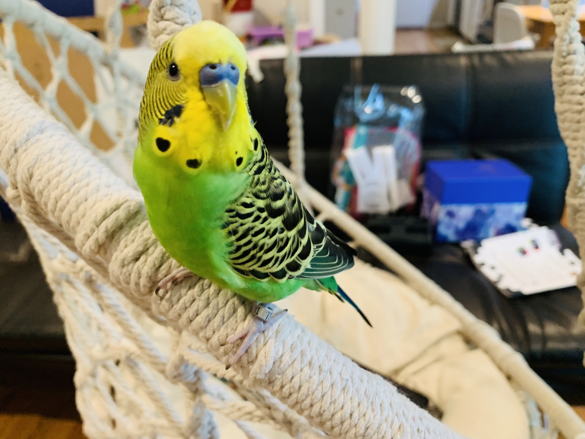

Hi! I'm Ashra Siddiqui! Today I am going to tell you about myself!!
I am 9 years old, was born in Boston, Massachusets 2011, november 29. When I was 2 years old I moved to Maryland, and went to the pre-k, White Flint Childrens House. I have been in maryland almost my whole life. Then when I was 5 years old, I moved to Potomac, where I live now.
I love doing so many different kinds of things! Most of them are my hobbies. Down below is all of my most common hobbies!
"Happiness can be found in the darkest of times, but if only one remembers to turn on the light."~ Albus Dumbelldore
"An object does not have to be a reward, the good, happiness, and congrats is the real reward." ~Jonas Salk
"Always ask for help when you need it" ~ Edmund Hillary and Tenzing Norgay
I have a wonderful, silly, chattering, cute, halrious, pet!! His name is Lemon!
Name: Lemon Peet-e Cookie Siddiqui
Gender: Male
Age: 8 months old
Date of birth: October 23 2020
Type of animal: Parakeet
When he was brought home: December 19 2020
Breeder he was breeeded by: Featherd coop
First vacation: to Assateague Island
Favorite human: Ashra Siddiqui (me, but he likes sitting on mom's shoulder)
Favorite toy: His bell toy (it has a hay weaved top, and on the very bottom there is a bell.)
Things he says: hello, baby bird, good bird, ach-u-kuti, cuti-cuti, Ashra, cookie, Ashra-cuti, NO, choope, chu, doobe,ah-chu, and other gibbrish words
Hobbies: chirping, being a chatterbox, looking outside the window, playing with rocks, rolling over, chewing paper, distubing mom when she is working, flying evrywhere around the house, pecking my feet, doing maths with me, going on mom's shoulder, playing with drift wood, eating, taking bath in the sink, playing with his toys, and LOVING MEEEEE!!!!
Favorite food: thyme, spray millet, and his seeds
favorite game to play with me: rocks
injuries: broken a leg
That is it for Lemon!! Hope you had the fun learning about my life!!!!